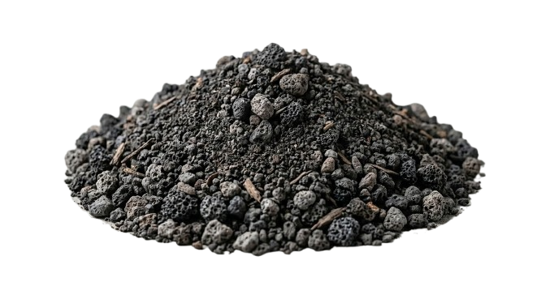

HOKKAIDO
北海道
SUBARCTIC CLIMATE / 亞寒帶

LAVENDER
Representative flower of Hokkaido hills.
北海道の丘の代表的な花です。
SUNFLOWER
Representative flower of Hokkaido
北海道の丘の代表的花。

COMPOSITION
Andosols (Volcanic Ash Soil)
PH LEVEL
5.5 - 6.5 (Slightly Acidic)
NUTRIENTS
High Organic Matter